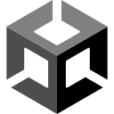
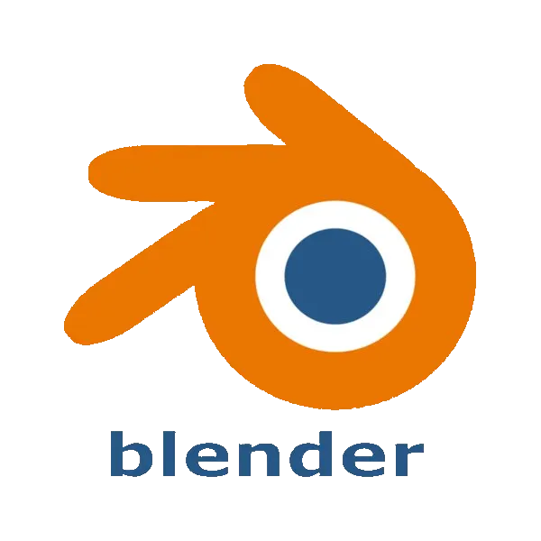
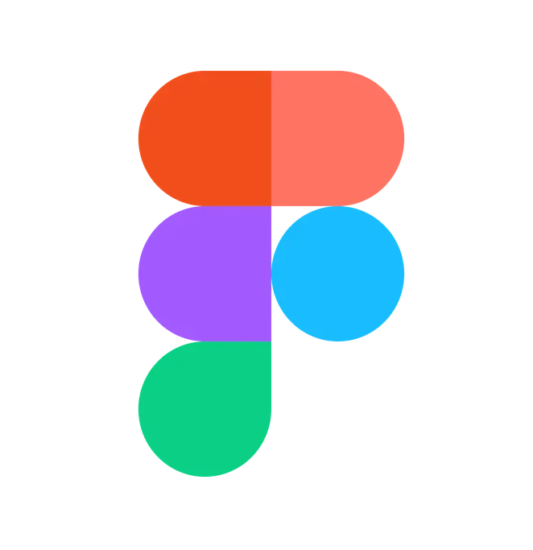

Necromancer x Magical Girl
- Langage
- C#
- Moteur

Unity 6
Outils

Blender
Figma
Incarnez un Nécromancien ou une Magical Girl et explorez un donjon en coopération locale. Terrassez les ennemis, puis enrôlez-les dans votre armée pour surpasser celle de votre camarade.
- Mon rôle
- Gameplay & assets visuels
- Équipe
- 2 personnes
- Durée
- 10 jours
- Systèmes de combat : projectiles, hitboxes, dégâts et knockback.
- Moveset des deux personnages : capacités, déplacement et visée.
- Intégration et modification des assets et des animations.
- Intégration des feedbacks visuels : effets, particules, flashs et réactions aux impacts.